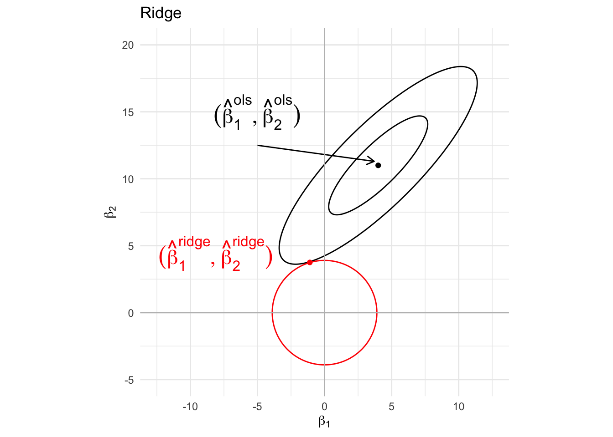
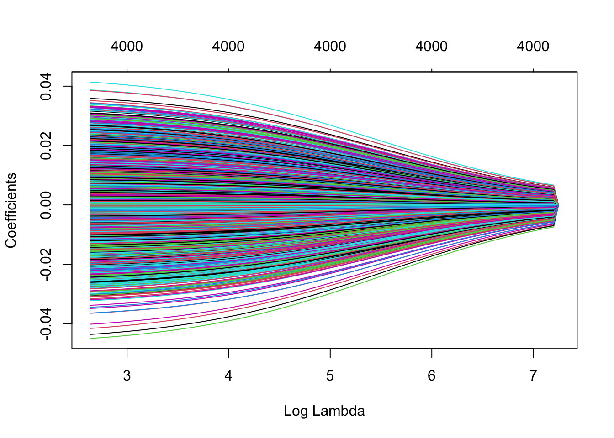

Key idea
- Another fast approach to fit the GWAS-LMM.
- Builds on the developments in BOLT-LMM
- Project known covariates \(\mathbf{X}_c\) out
- Take BOLT-LMM-inf idea to use LOCO-residuals under the null model.
- Exploit link between mixed models and ridge regression for fast approximation of LOCO-BLUP under \(H_0\).
- Model LOCO residuals using candidate SNP.
\[
\mathbf{y}_\text{residual-LOCO, H_0} = \tilde{\mathbf{x}}_\text{test} \boldsymbol{\beta}_\text{test} + \epsilon
\]
- Use a score test similar to BOLT-LMM-inf
\[
T = \frac{(\tilde{\mathbf{x}}^T_\text{test}\mathbf{y}_\text{residual-LOCO, H_0})^2}{\hat\sigma^2_\epsilon\tilde{\mathbf{x}}^T\tilde{\mathbf{x}}}
\]
- Estimate \(\hat{\sigma}^2_\epsilon\) under the null model:
\[
\hat\sigma^2_\epsilon = \frac{\vert\vert\mathbf{y}_\text{residual-LOCO, H_0}\vert\vert^2_2}{N-C}
\]
- In contrast to BOLT-LMM-inf no calibration factor used in denominator
- they “found in applications that the results obtained using this simple form match up closely to those using a calibration factor”
Key contribution efficiently obtain \(\mathbf{y}_\text{residual-LOCO, H_0}\)
- Check method section paper
- As usual in publications: to understand the methods, it is all about the supplement
Intermezzo ridge regression
- Penalized regression useful in a high dimensional context when the number of covariates are larger than the number of samples (e.g. M >> N)
- When covariates are highly correlated
The ridge parameter estimator is defined as the parameter \(\mathbf\beta\) that minimises the penalised least squares loss function
\[
\text{SSE}_\text{pen}=\Vert\mathbf{Y} - \mathbf{X\beta}\Vert_2^2 + \lambda \Vert \boldsymbol{\beta} \Vert_2^2
\]
Note, that that is equivalent to minimizing
\[
\Vert\mathbf{Y} - \mathbf{X\beta}\Vert_2^2 \text{ subject to } \Vert \boldsymbol{\beta}\Vert^2_2\leq s
\]
Note, that \(s\) has a one-to-one correspondence with \(\lambda\)
Graphical interpretation

- Ridge estimator can switch sign as compared to OLS.
Estimator
The loss function to be minimised is
\[
L_\text{ridge}(\mathbf{Y},\boldsymbol{\beta},\lambda) = \text{SSE}_\text{pen}=\Vert\mathbf{Y} - \mathbf{X\beta}\Vert_2^2 + \lambda \Vert \boldsymbol{\beta} \Vert_2^2.
\]
First we re-express the loss function in matrix notation:
\[
L_\text{ridge}(\mathbf{Y},\boldsymbol{\beta},\lambda) = (\mathbf{Y}-\mathbf{X\beta})^T(\mathbf{Y}-\mathbf{X\beta}) + \lambda \boldsymbol{\beta}^T\boldsymbol{\beta}.
\]
Solving \(L_\text{ridge}(\mathbf{Y},\boldsymbol{\beta},\lambda)=0\) gives
[
\[\begin{array}{rcl}
\frac{\partial}{\partial \boldsymbol{\beta}}L_\text{ridge}(\mathbf{Y},\boldsymbol{\beta},\lambda)
&=& 0 \\\\
-2\mathbf{X}^T(\mathbf{Y}-\mathbf{X\beta})+2\lambda\boldsymbol{\beta} &=& 0\\\\
\hat{\boldsymbol{\beta}} &=& (\mathbf{X^TX}+\lambda \mathbf{I})^{-1} \mathbf{X^T Y}
\end{array}\]
]
It can be shown that \((\mathbf{X^TX}+\lambda \mathbf{I})\) is always of rank \(p\) if \(\lambda>0\).
Hence, \((\mathbf{X^TX}+\lambda \mathbf{I})\) is invertible and \(\hat{\boldsymbol{\beta}}\) exists even if \(p>>>n\).
Link with SVD
Write the SVD of \(\mathbf{X}\) (\(p>N\)) as
\[
\mathbf{X} = \sum_{i=1}^N \delta_i \mathbf{u}_i \mathbf{v}_i^T = \sum_{i=1}^p \delta_i \mathbf{u}_i \mathbf{v}_i^T = \mathbf{U}\boldsymbol{\Delta} \mathbf{V}^T ,
\]
with
\(\delta_{n+1}=\delta_{n+2}= \cdots = \delta_p=0\)
\(\boldsymbol{\Delta}\) a \(p\times p\) diagonal matrix of the \(\delta_1,\ldots, \delta_p\)
\(\mathbf{U}\) an \(n\times p\) matrix and \(\mathbf{V}\) a \(p \times p\) matrix. Note that only the first \(n\) columns of \(\mathbf{U}\) and \(\mathbf{V}\) are informative.
With the SVD of \(\mathbf{X}\) we write
\[
\mathbf{X}^T\mathbf{X} = \mathbf{V}\boldsymbol{\Delta
}^2\mathbf{V}^T.
\]
The inverse of \(\mathbf{X}^T\mathbf{X}\) is then given by
\[
(\mathbf{X}^T\mathbf{X})^{-1} = \mathbf{V}\boldsymbol{\Delta}^{-2}\mathbf{V}^T.
\]
Since \(\boldsymbol{\Delta}\) has \(\delta_{n+1}=\delta_{n+2}= \cdots = \delta_p=0\), it is not invertible.
Note that it can be shown that
\[
\mathbf{X^TX}+\lambda \mathbf{I} = \mathbf{V} (\boldsymbol{\Delta}^2+\lambda \mathbf{I}) \mathbf{V}^T ,
\]
i.e. adding a constant to the diagonal elements does not affect the eigenvectors, and all eigenvalues are increased by this constant.
\(\longrightarrow\) zero eigenvalues become \(\lambda\).
Hence,
\[
(\mathbf{X^TX}+\lambda \mathbf{I})^{-1} = \mathbf{V} (\boldsymbol{\Delta}^2+\lambda \mathbf{I})^{-1} \mathbf{V}^T ,
\]
which can be computed even when some eigenvalues in \(\boldsymbol{\Delta}^2\) are zero.
Note, that for high dimensional data (\(p>>>N\)) many eigenvalues are zero because \(\mathbf{X^TX}\) is a \(p \times p\) matrix and has rank \(N\).
Properties ridge
The Ridge estimator is biased! The \(\boldsymbol{\beta}\) are shrunken to zero!
\[\begin{eqnarray}
\text{E}[\hat{\boldsymbol{\beta}}] &=& (\mathbf{X^TX}+\lambda \mathbf{I})^{-1} \mathbf{X}^T \text{E}[\mathbf{Y}]\\\\
&=& (\mathbf{X}^T\mathbf{X}+\lambda \mathbf{I})^{-1} \mathbf{X}^T \mathbf{X}\boldsymbol{\beta}\\
\end{eqnarray}\]
Note, that the shrinkage is larger in the direction of the smaller eigenvalues.
\[\begin{eqnarray}
\text{E}[\hat{\boldsymbol{\beta}}]&=&\mathbf{V} (\boldsymbol{\Delta}^2+\lambda \mathbf{I})^{-1} \mathbf{V}^T \mathbf{V} \boldsymbol{\Delta}^2 \mathbf{V}^T\boldsymbol{\beta}\\\\
&=&\mathbf{V} (\boldsymbol{\Delta}^2+\lambda \mathbf{I})^{-1} \boldsymbol{\Delta}^2 \mathbf{V}^T\boldsymbol{\beta}\\\\
&=& \mathbf{V}
\left[\begin{array}{ccc}
\frac{\delta_1^2}{\delta_1^2+\lambda}&\ldots&0 \\
&\vdots&\\
0&\ldots&\frac{\delta_r^2}{\delta_r^2+\lambda}
\end{array}\right]
\mathbf{V}^T\boldsymbol{\beta}
\end{eqnarray}\]
- Ridge regression can lead to parameters that switch sign if penality increases
Toxicogenomics example
N = 30 chemical compounds have been screened for toxicity
Bioassay data on toxicity screening
Gene expressions in a liver cell line are profiled for each compound (M = 4000 genes)
Predict Bioassay score in function of gene expression.
toxData <- read_csv(
"https://raw.githubusercontent.com/statOmics/HDA2020/data/toxDataCentered.csv",
col_types = cols()
)
dim(toxData)
## [1] 30 4001
lmFit <- lm (BA ~. , toxData)
lmFit %>%
coef %>%
head(40)
## (Intercept) X1 X2 X3 X4
## -2.059917e-17 -7.456994e+00 3.571348e-01 1.124923e+01 1.083540e+01
## X5 X6 X7 X8 X9
## -1.374339e+01 5.683387e+00 6.553878e+01 4.340456e+00 7.910392e+00
## X10 X11 X12 X13 X14
## 3.702961e+01 -5.483687e+01 -5.555478e+01 5.792467e+00 2.314280e+01
## X15 X16 X17 X18 X19
## -6.961036e+00 -2.852506e+01 -2.255090e+01 -9.796237e+01 -3.041718e+01
## X20 X21 X22 X23 X24
## -3.269917e+01 -1.428088e+01 -1.614313e+01 -2.274987e+01 7.316352e+01
## X25 X26 X27 X28 X29
## -5.706583e+00 3.747454e+01 -2.019991e+01 1.499068e+01 9.960810e+01
## X30 X31 X32 X33 X34
## NA NA NA NA NA
## X35 X36 X37 X38 X39
## NA NA NA NA NA
lmFit %>%
coef %>%
is.na %>%
sum
## [1] 3971
lmFit %>%
coef %>%
is.na %>%
`!` %>%
sum
## [1] 30
## Loading required package: Matrix
##
## Attaching package: 'Matrix'
## The following objects are masked from 'package:tidyr':
##
## expand, pack, unpack
## Loaded glmnet 4.1-8
mRidge <- glmnet(
x = toxData[,-1] %>%
as.matrix,
y = toxData %>%
pull(BA),
alpha = 0) # ridge: alpha = 0
plot(mRidge, xvar="lambda")

No penalisation of some parameters
Note, that we typically do not penalise the intercept. We can do this by introducing matrix
\[
\mathbf{D} = \left[\begin{array}{ccc}0& 0 \\ 0&\mathbf{I}\end{array}\right]
\]
And let
\[
\mathbf{C} = \left[ \begin{array}{cc} 1 & \mathbf{1}\\\mathbf{1}&\mathbf{X}_{1\ldots p}\end{array}\right] \text{ and } \boldsymbol{\theta} =\left[\begin{array}{c}\beta_0\\
\boldsymbol{\beta}_{1\ldots p}\end{array}\right]
\]
with \(\mathbf{X}_{1\ldots p}\) the matrix of the predictors for which the slope terms \(\boldsymbol {\beta}_{1\ldots p}\) are estimated.
The loss function then becomes
\[
L_\text{ridge}(\mathbf{Y},\boldsymbol{\beta},\lambda) = (\mathbf{Y}-\mathbf{C\theta})^T(\mathbf{Y}-\mathbf{C\theta}) + \lambda \boldsymbol{\beta}^T\mathbf{D}\boldsymbol{\theta}.
\]
and the ridge estimator then becomes
\[
\hat{\boldsymbol{\beta}} = (\mathbf{C^TC}+\lambda \mathbf{D})^{-1} \mathbf{C^T Y}
\]
Link LMM
Add Gaussian prior on the model parameters/specify the fixed effects as random effects
\[
\begin{array}{ccl}
\mathbf{Y} &=& \mathbf{1}\beta_0 + \mathbf{X}_{1\ldots p} \boldsymbol{\beta}_{1\ldots p} + \boldsymbol{\epsilon}\\
\boldsymbol{\beta}_{1\ldots p} &\sim& \text{MVN}(0,\mathbf{I}\sigma^2_\beta) \\
\boldsymbol{\epsilon} &\sim& \text{MVN}(0,\mathbf{I}\sigma^2_\epsilon) \\
\end{array}
\]
Note that we know from LMM theory that the BLUP is
\[
\hat{\boldsymbol{\theta}} = (\mathbf{C}^T\mathbf{C} + \sigma^2_\epsilon H)^{-1}\mathbf{C}^T\mathbf{Y}
\]
with
\[
\mathbf{H}=\left[\begin{array}{cc}
\mathbf{0}&\mathbf{0}\\
\mathbf{0}&\mathbf{G}^{-1}
\end{array}\right] = \left[\begin{array}{cc}
\mathbf{0}&\mathbf{0}\\
\mathbf{0}&\sigma^{-2}_{\beta}\mathbf{I}
\end{array}\right] = \sigma^{-2}_\beta \mathbf{D}
\]
So the BLUP reduces to
\[
\hat{\boldsymbol{\theta}} = (\mathbf{C}^T\mathbf{C} + \frac{\sigma^2_\epsilon}{\sigma^2_\beta} \mathbf{D})^{-1}\mathbf{C}^T\mathbf{Y}
\]
which is equivalent to the ridge solution!
\(\frac{\sigma^2_\epsilon}{\sigma^2_\beta}\) plays the role of ridge penalty \(\lambda\) in ridge regression.
we can exploit the mixed model machinery to perform ridge regression and to estimate the penalty parameter using variance components.
\(\rightarrow\) Regenie is exploiting this link to avoid computational complexity of fitting LMMs.
\(\rightarrow\) Revisit to supplement
LS0tCnRpdGxlOiAiVW5kZXIgdGhlIGhvb2Qgb2YgUkVHRU5JRSIKYXV0aG9yOiAiTGlldmVuIENsZW1lbnQiCmRhdGU6ICJzdGF0T21pY3MsIEdoZW50IFVuaXZlcnNpdHkgKGh0dHBzOi8vc3RhdG9taWNzLmdpdGh1Yi5pbykiCm91dHB1dDoKICAgIGJvb2tkb3duOjpodG1sX2RvY3VtZW50MjoKICAgICAgY29kZV9kb3dubG9hZDogdHJ1ZQogICAgICBkZl9wcmludDogcGFnZWQKICAgICAgdGhlbWU6IGZsYXRseQogICAgICBoaWdobGlnaHQ6IHRhbmdvCiAgICAgIHRvYzogdHJ1ZQogICAgICB0b2NfZmxvYXQ6IHRydWUKICAgICAgbnVtYmVyX3NlY3Rpb25zOiB0cnVlCiAgICAgIGNvZGVfZm9sZGluZzogc2hvdwotLS0KCiMgS2V5IGlkZWEKCi0gQW5vdGhlciBmYXN0IGFwcHJvYWNoIHRvIGZpdCB0aGUgR1dBUy1MTU0uIAotIEJ1aWxkcyBvbiB0aGUgZGV2ZWxvcG1lbnRzIGluIEJPTFQtTE1NCgoxLiBQcm9qZWN0IGtub3duIGNvdmFyaWF0ZXMgJFxtYXRoYmZ7WH1fYyQgb3V0IAoyLiBUYWtlIEJPTFQtTE1NLWluZiBpZGVhIHRvIHVzZSBMT0NPLXJlc2lkdWFscyB1bmRlciB0aGUgbnVsbCBtb2RlbC4gCjMuIEV4cGxvaXQgbGluayBiZXR3ZWVuIG1peGVkIG1vZGVscyBhbmQgcmlkZ2UgcmVncmVzc2lvbiBmb3IgZmFzdCBhcHByb3hpbWF0aW9uIG9mIExPQ08tQkxVUCB1bmRlciAkSF8wJC4gCjQuIE1vZGVsIExPQ08gcmVzaWR1YWxzIHVzaW5nIGNhbmRpZGF0ZSBTTlAuIAoKJCQKXG1hdGhiZnt5fV9cdGV4dHtyZXNpZHVhbC1MT0NPLCBIXzB9ID0gXHRpbGRle1xtYXRoYmZ7eH19X1x0ZXh0e3Rlc3R9IFxib2xkc3ltYm9se1xiZXRhfV9cdGV4dHt0ZXN0fSArIFxlcHNpbG9uCiQkCgo1LiBVc2UgYSBzY29yZSB0ZXN0IHNpbWlsYXIgdG8gQk9MVC1MTU0taW5mIAoKJCQKVCA9IFxmcmFjeyhcdGlsZGV7XG1hdGhiZnt4fX1eVF9cdGV4dHt0ZXN0fVxtYXRoYmZ7eX1fXHRleHR7cmVzaWR1YWwtTE9DTywgSF8wfSleMn17XGhhdFxzaWdtYV4yX1xlcHNpbG9uXHRpbGRle1xtYXRoYmZ7eH19XlRcdGlsZGV7XG1hdGhiZnt4fX19CiQkCgo2LiBFc3RpbWF0ZSAkXGhhdHtcc2lnbWF9XjJfXGVwc2lsb24kIHVuZGVyIHRoZSBudWxsIG1vZGVsOiAKCiQkClxoYXRcc2lnbWFeMl9cZXBzaWxvbiA9IFxmcmFje1x2ZXJ0XHZlcnRcbWF0aGJme3l9X1x0ZXh0e3Jlc2lkdWFsLUxPQ08sIEhfMH1cdmVydFx2ZXJ0XjJfMn17Ti1DfQokJCAKCi0gSW4gY29udHJhc3QgdG8gQk9MVC1MTU0taW5mIG5vIGNhbGlicmF0aW9uIGZhY3RvciB1c2VkIGluIGRlbm9taW5hdG9yCi0gdGhleSAiZm91bmQgaW4gYXBwbGljYXRpb25zIHRoYXQgdGhlIHJlc3VsdHMgb2J0YWluZWQgdXNpbmcgdGhpcyBzaW1wbGUgZm9ybSBtYXRjaCB1cCBjbG9zZWx5IHRvIHRob3NlIHVzaW5nIGEgY2FsaWJyYXRpb24gZmFjdG9yIgoKKipLZXkgY29udHJpYnV0aW9uIGVmZmljaWVudGx5IG9idGFpbiAkXG1hdGhiZnt5fV9cdGV4dHtyZXNpZHVhbC1MT0NPLCBIXzB9JCoqCgotIENoZWNrIG1ldGhvZCBzZWN0aW9uIFtwYXBlcl0oaHR0cHM6Ly93d3cubmF0dXJlLmNvbS9hcnRpY2xlcy9zNDE1ODgtMDIxLTAwODcwLTcucGRmKQotIEFzIHVzdWFsIGluIHB1YmxpY2F0aW9uczogdG8gdW5kZXJzdGFuZCB0aGUgbWV0aG9kcywgaXQgaXMgYWxsIGFib3V0IHRoZSBbc3VwcGxlbWVudF0oaHR0cHM6Ly9zdGF0aWMtY29udGVudC5zcHJpbmdlci5jb20vZXNtL2FydCUzQTEwLjEwMzglMkZzNDE1ODgtMDIxLTAwODcwLTcvTWVkaWFPYmplY3RzLzQxNTg4XzIwMjFfODcwX01PRVNNMV9FU00ucGRmKQoKCiMgSW50ZXJtZXp6byByaWRnZSByZWdyZXNzaW9uCgotIFBlbmFsaXplZCByZWdyZXNzaW9uIHVzZWZ1bCBpbiBhIGhpZ2ggZGltZW5zaW9uYWwgY29udGV4dCB3aGVuIHRoZSBudW1iZXIgb2YgY292YXJpYXRlcyBhcmUgbGFyZ2VyIHRoYW4gdGhlIG51bWJlciBvZiBzYW1wbGVzIChlLmcuIE0gPj4gTikKLSBXaGVuIGNvdmFyaWF0ZXMgYXJlIGhpZ2hseSBjb3JyZWxhdGVkCgpgYGB7ciBlY2hvPUZBTFNFLCBtZXNzYWdlPSBGQUxTRX0KbGlicmFyeSh0aWR5dmVyc2UpCmxpYnJhcnkoZ3JpZEV4dHJhKQpgYGAKCgogVGhlIHJpZGdlIHBhcmFtZXRlciBlc3RpbWF0b3IgaXMgZGVmaW5lZCBhcyB0aGUgcGFyYW1ldGVyICRcbWF0aGJmXGJldGEkIHRoYXQgbWluaW1pc2VzIHRoZSAqKnBlbmFsaXNlZCBsZWFzdCBzcXVhcmVzIGxvc3MgZnVuY3Rpb24qKgoKIFxbCiBcdGV4dHtTU0V9X1x0ZXh0e3Blbn09XFZlcnRcbWF0aGJme1l9IC0gXG1hdGhiZntYXGJldGF9XFZlcnRfMl4yICsgXGxhbWJkYSBcVmVydCBcYm9sZHN5bWJvbHtcYmV0YX0gXFZlcnRfMl4yClxdCgotICRcVmVydCBcYm9sZHN5bWJvbHtcYmV0YX0gXFZlcnRfMl4yPVxzdW1fe2o9MX1ecCBcYmV0YV9qXjIkIGlzIHRoZSAqKiRMXzIkIHBlbmFsdHkgdGVybSoqCgotICRcbGFtYmRhPjAkIGlzIHRoZSBwZW5hbHR5IHBhcmFtZXRlciAodG8gYmUgY2hvc2VuIGJ5IHRoZSB1c2VyKS4KCk5vdGUsIHRoYXQgdGhhdCBpcyBlcXVpdmFsZW50IHRvIG1pbmltaXppbmcKXFsKXFZlcnRcbWF0aGJme1l9IC0gXG1hdGhiZntYXGJldGF9XFZlcnRfMl4yIFx0ZXh0eyBzdWJqZWN0IHRvIH0gXFZlcnQgXGJvbGRzeW1ib2x7XGJldGF9XFZlcnReMl8yXGxlcSBzClxdCgpOb3RlLCB0aGF0ICRzJCBoYXMgYSBvbmUtdG8tb25lIGNvcnJlc3BvbmRlbmNlIHdpdGggJFxsYW1iZGEkCgojIyBHcmFwaGljYWwgaW50ZXJwcmV0YXRpb24KCmBgYHtyIGVjaG8gPSBGQUxTRSwgd2FybmluZyA9IEZBTFNFLCBtZXNzYWdlID0gRkFMU0V9CmxpYnJhcnkoZ2dmb3JjZSkKbGlicmFyeShsYXRleDJleHApCmxpYnJhcnkoZ3JpZEV4dHJhKQoKcDEgPC0gZ2dwbG90KCkgKwogIGdlb21fZWxsaXBzZShhZXMoeDAgPSA0LCB5MCA9IDExLCBhID0gMTAsIGIgPSAzLCBhbmdsZSA9IHBpIC8gNCkpICsKICBnZW9tX2VsbGlwc2UoYWVzKHgwID0gNCwgeTAgPSAxMSwgYSA9IDUsIGIgPSAxLjUsIGFuZ2xlID0gcGkgLyA0KSkgKwogIHhsaW0oLTEyLjUsIDEyLjUpICsKICB5bGltKC01LCAyMCkgKwogIGdlb21fcG9pbnQoYWVzKHggPSA0LCB5ID0gMTEpKSArCiAgYW5ub3RhdGUoInRleHQiLCBsYWJlbCA9IFRlWCgiJChcXGhhdHtcXGJldGF9XzFee29sc30sIFxcaGF0e1xcYmV0YX1fMl57b2xzfSkkIiksIHggPSAtNSwgeSA9IDE1LCBzaXplID0gNiwgcGFyc2UgPSBUUlVFKSArCiAgeGxhYihUZVgoIiRcXGJldGFfMSQiKSkgKwogIHlsYWIoVGVYKCIkXFxiZXRhXzIkIikpICsKICBnZW9tX3NlZ21lbnQoCiAgICBhZXMoeCA9IC01LCB5ID0gMTIuNSwgeGVuZCA9IDMuNywgeWVuZCA9IDExLjMpLAogICAgYXJyb3cgPSBhcnJvdyhsZW5ndGggPSB1bml0KDAuMjUsICJjbSIpKQogICAgKSArCiAgY29vcmRfZml4ZWQoKQoKcFJpZGdlIDwtIHAxICsKICBnZW9tX2NpcmNsZShhZXMoeDAgPSAwLCB5MCA9IDAsIHIgPSAzLjkpICwgY29sb3IgPSAicmVkIikgKwogIGdlb21fcG9pbnQoYWVzKHggPSAtMS4xLCB5ID0gMy43NSksIGNvbG9yID0gInJlZCIpICsKICBhbm5vdGF0ZSgidGV4dCIsIGxhYmVsID0gVGVYKCIkKFxcaGF0e1xcYmV0YX1fMV57cmlkZ2V9LCBcXGhhdHtcXGJldGF9XzJee3JpZGdlfSkkIiksIHggPSAtOC4xLCB5ID0gNC40NSwgc2l6ZSA9IDYsIHBhcnNlID0gVFJVRSwgY29sb3IgPSAicmVkIikgKwogIGdndGl0bGUoIlJpZGdlIikgKwogIGdlb21fdmxpbmUoeGludGVyY2VwdCA9IDAsIGNvbG9yID0gImdyZXkiKSArCiAgZ2VvbV9obGluZSh5aW50ZXJjZXB0ID0gMCwgY29sb3IgPSAiZ3JleSIpICsKICB0aGVtZV9taW5pbWFsKCkKCnBSaWRnZQpgYGAKCi0gUmlkZ2UgZXN0aW1hdG9yIGNhbiBzd2l0Y2ggc2lnbiBhcyBjb21wYXJlZCB0byBPTFMuIAoKIyMgRXN0aW1hdG9yCgpUaGUgbG9zcyBmdW5jdGlvbiB0byBiZSBtaW5pbWlzZWQgaXMKICBcWwogICBMX1x0ZXh0e3JpZGdlfShcbWF0aGJme1l9LFxib2xkc3ltYm9se1xiZXRhfSxcbGFtYmRhKSA9IFx0ZXh0e1NTRX1fXHRleHR7cGVufT1cVmVydFxtYXRoYmZ7WX0gLSBcbWF0aGJme1hcYmV0YX1cVmVydF8yXjIgKyBcbGFtYmRhIFxWZXJ0IFxib2xkc3ltYm9se1xiZXRhfSBcVmVydF8yXjIuCiBcXQogCiBGaXJzdCB3ZSByZS1leHByZXNzIHRoZSBsb3NzIGZ1bmN0aW9uIGluIG1hdHJpeCBub3RhdGlvbjoKIFxbCiAgIExfXHRleHR7cmlkZ2V9KFxtYXRoYmZ7WX0sXGJvbGRzeW1ib2x7XGJldGF9LFxsYW1iZGEpID0gKFxtYXRoYmZ7WX0tXG1hdGhiZntYXGJldGF9KV5UKFxtYXRoYmZ7WX0tXG1hdGhiZntYXGJldGF9KSArIFxsYW1iZGEgXGJvbGRzeW1ib2x7XGJldGF9XlRcYm9sZHN5bWJvbHtcYmV0YX0uCiBcXQogCiBTb2x2aW5nICRMX1x0ZXh0e3JpZGdlfShcbWF0aGJme1l9LFxib2xkc3ltYm9se1xiZXRhfSxcbGFtYmRhKT0wJCBnaXZlcwogCiBcWwogXGJlZ2lue2FycmF5fXtyY2x9CiAgIFxmcmFje1xwYXJ0aWFsfXtccGFydGlhbCBcYm9sZHN5bWJvbHtcYmV0YX19TF9cdGV4dHtyaWRnZX0oXG1hdGhiZntZfSxcYm9sZHN5bWJvbHtcYmV0YX0sXGxhbWJkYSkgIAogICAmPSYgMCBcXFxcCi0yXG1hdGhiZntYfV5UKFxtYXRoYmZ7WX0tXG1hdGhiZntYXGJldGF9KSsyXGxhbWJkYVxib2xkc3ltYm9se1xiZXRhfSAmPSYgMFxcXFwKXGhhdHtcYm9sZHN5bWJvbHtcYmV0YX19ICY9JiAoXG1hdGhiZntYXlRYfStcbGFtYmRhIFxtYXRoYmZ7SX0pXnstMX0gXG1hdGhiZntYXlQgWX0KCiAgIFxlbmR7YXJyYXl9ClxdCgpJdCBjYW4gYmUgc2hvd24gdGhhdCAkKFxtYXRoYmZ7WF5UWH0rXGxhbWJkYSBcbWF0aGJme0l9KSQgaXMgYWx3YXlzIG9mIHJhbmsgJHAkIGlmICRcbGFtYmRhPjAkLgoKSGVuY2UsICQoXG1hdGhiZntYXlRYfStcbGFtYmRhIFxtYXRoYmZ7SX0pJCBpcyBpbnZlcnRpYmxlIGFuZCAkXGhhdHtcYm9sZHN5bWJvbHtcYmV0YX19JCBleGlzdHMgZXZlbiBpZiAkcD4+Pm4kLgoKIyMgTGluayB3aXRoIFNWRAoKV3JpdGUgdGhlIFNWRCBvZiAkXG1hdGhiZntYfSQgKCRwPk4kKSBhcwpcWwogICBcbWF0aGJme1h9ID0gXHN1bV97aT0xfV5OIFxkZWx0YV9pIFxtYXRoYmZ7dX1faSBcbWF0aGJme3Z9X2leVCA9IFxzdW1fe2k9MX1ecCBcZGVsdGFfaSBcbWF0aGJme3V9X2kgXG1hdGhiZnt2fV9pXlQgID0gXG1hdGhiZntVfVxib2xkc3ltYm9se1xEZWx0YX0gXG1hdGhiZntWfV5UICwKXF0Kd2l0aAoKLSAkXGRlbHRhX3tuKzF9PVxkZWx0YV97bisyfT0gXGNkb3RzID0gXGRlbHRhX3A9MCQKCi0gJFxib2xkc3ltYm9se1xEZWx0YX0kIGEgJHBcdGltZXMgcCQgZGlhZ29uYWwgbWF0cml4IG9mIHRoZSAkXGRlbHRhXzEsXGxkb3RzLCBcZGVsdGFfcCQKCi0gICRcbWF0aGJme1V9JCBhbiAkblx0aW1lcyBwJCBtYXRyaXggYW5kICRcbWF0aGJme1Z9JCBhICRwIFx0aW1lcyBwJCBtYXRyaXguIE5vdGUgdGhhdCBvbmx5IHRoZSBmaXJzdCAkbiQgY29sdW1ucyBvZiAkXG1hdGhiZntVfSQgYW5kICRcbWF0aGJme1Z9JCBhcmUgaW5mb3JtYXRpdmUuCgpXaXRoIHRoZSBTVkQgb2YgJFxtYXRoYmZ7WH0kIHdlIHdyaXRlCiBcWwogICBcbWF0aGJme1h9XlRcbWF0aGJme1h9ID0gXG1hdGhiZntWfVxib2xkc3ltYm9se1xEZWx0YQogICAgIH1eMlxtYXRoYmZ7Vn1eVC4KIFxdCiBUaGUgaW52ZXJzZSBvZiAkXG1hdGhiZntYfV5UXG1hdGhiZntYfSQgaXMgdGhlbiBnaXZlbiBieQogXFsKICAgKFxtYXRoYmZ7WH1eVFxtYXRoYmZ7WH0pXnstMX0gPSBcbWF0aGJme1Z9XGJvbGRzeW1ib2x7XERlbHRhfV57LTJ9XG1hdGhiZntWfV5ULgogXF0KIFNpbmNlICRcYm9sZHN5bWJvbHtcRGVsdGF9JCBoYXMgJFxkZWx0YV97bisxfT1cZGVsdGFfe24rMn09IFxjZG90cyA9IFxkZWx0YV9wPTAkLCBpdCBpcyBub3QgaW52ZXJ0aWJsZS4KCgpOb3RlIHRoYXQgaXQgY2FuIGJlIHNob3duIHRoYXQKXFsKICBcbWF0aGJme1heVFh9K1xsYW1iZGEgXG1hdGhiZntJfSA9IFxtYXRoYmZ7Vn0gKFxib2xkc3ltYm9se1xEZWx0YX1eMitcbGFtYmRhIFxtYXRoYmZ7SX0pIFxtYXRoYmZ7Vn1eVCAsClxdCmkuZS4gYWRkaW5nIGEgY29uc3RhbnQgdG8gdGhlIGRpYWdvbmFsIGVsZW1lbnRzIGRvZXMgbm90IGFmZmVjdCB0aGUgZWlnZW52ZWN0b3JzLCBhbmQgYWxsIGVpZ2VudmFsdWVzIGFyZSBpbmNyZWFzZWQgYnkgdGhpcyBjb25zdGFudC4gICAKJFxsb25ncmlnaHRhcnJvdyQgemVybyBlaWdlbnZhbHVlcyBiZWNvbWUgJFxsYW1iZGEkLgoKSGVuY2UsClxbCiAgKFxtYXRoYmZ7WF5UWH0rXGxhbWJkYSBcbWF0aGJme0l9KV57LTF9ID0gXG1hdGhiZntWfSAoXGJvbGRzeW1ib2x7XERlbHRhfV4yK1xsYW1iZGEgXG1hdGhiZntJfSleey0xfSBcbWF0aGJme1Z9XlQgLApcXQp3aGljaCBjYW4gYmUgY29tcHV0ZWQgZXZlbiB3aGVuIHNvbWUgZWlnZW52YWx1ZXMgaW4gJFxib2xkc3ltYm9se1xEZWx0YX1eMiQgYXJlIHplcm8uCgpOb3RlLCB0aGF0IGZvciBoaWdoIGRpbWVuc2lvbmFsIGRhdGEgKCRwPj4+TiQpIG1hbnkgZWlnZW52YWx1ZXMgYXJlIHplcm8gYmVjYXVzZSAkXG1hdGhiZntYXlRYfSQgaXMgYSAkcCBcdGltZXMgcCQgbWF0cml4IGFuZCBoYXMgcmFuayAkTiQuCgojIyBQcm9wZXJ0aWVzIHJpZGdlCgotIFRoZSBSaWRnZSBlc3RpbWF0b3IgaXMgYmlhc2VkISBUaGUgJFxib2xkc3ltYm9se1xiZXRhfSQgYXJlIHNocnVua2VuIHRvIHplcm8hClxiZWdpbntlcW5hcnJheX0KIFx0ZXh0e0V9W1xoYXR7XGJvbGRzeW1ib2x7XGJldGF9fV0gJj0mIChcbWF0aGJme1heVFh9K1xsYW1iZGEgXG1hdGhiZntJfSleey0xfSBcbWF0aGJme1h9XlQgXHRleHR7RX1bXG1hdGhiZntZfV1cXFxcCiY9JiAoXG1hdGhiZntYfV5UXG1hdGhiZntYfStcbGFtYmRhIFxtYXRoYmZ7SX0pXnstMX0gXG1hdGhiZntYfV5UIFxtYXRoYmZ7WH1cYm9sZHN5bWJvbHtcYmV0YX1cXApcZW5ke2VxbmFycmF5fQoKLSBOb3RlLCB0aGF0IHRoZSBzaHJpbmthZ2UgaXMgbGFyZ2VyIGluIHRoZSBkaXJlY3Rpb24gb2YgdGhlIHNtYWxsZXIgZWlnZW52YWx1ZXMuCgpcYmVnaW57ZXFuYXJyYXl9Clx0ZXh0e0V9W1xoYXR7XGJvbGRzeW1ib2x7XGJldGF9fV0mPSZcbWF0aGJme1Z9IChcYm9sZHN5bWJvbHtcRGVsdGF9XjIrXGxhbWJkYSBcbWF0aGJme0l9KV57LTF9IFxtYXRoYmZ7Vn1eVCBcbWF0aGJme1Z9IFxib2xkc3ltYm9se1xEZWx0YX1eMiBcbWF0aGJme1Z9XlRcYm9sZHN5bWJvbHtcYmV0YX1cXFxcCiY9JlxtYXRoYmZ7Vn0gKFxib2xkc3ltYm9se1xEZWx0YX1eMitcbGFtYmRhIFxtYXRoYmZ7SX0pXnstMX0gXGJvbGRzeW1ib2x7XERlbHRhfV4yIFxtYXRoYmZ7Vn1eVFxib2xkc3ltYm9se1xiZXRhfVxcXFwKJj0mIFxtYXRoYmZ7Vn0KXGxlZnRbXGJlZ2lue2FycmF5fXtjY2N9ClxmcmFje1xkZWx0YV8xXjJ9e1xkZWx0YV8xXjIrXGxhbWJkYX0mXGxkb3RzJjAgXFwKJlx2ZG90cyZcXAowJlxsZG90cyZcZnJhY3tcZGVsdGFfcl4yfXtcZGVsdGFfcl4yK1xsYW1iZGF9ClxlbmR7YXJyYXl9XHJpZ2h0XQpcbWF0aGJme1Z9XlRcYm9sZHN5bWJvbHtcYmV0YX0KXGVuZHtlcW5hcnJheX0KCi0gUmlkZ2UgcmVncmVzc2lvbiBjYW4gbGVhZCB0byBwYXJhbWV0ZXJzIHRoYXQgc3dpdGNoIHNpZ24gaWYgcGVuYWxpdHkgaW5jcmVhc2VzCgoKIyMgVG94aWNvZ2Vub21pY3MgZXhhbXBsZQoKLSBOID0gMzAgY2hlbWljYWwgY29tcG91bmRzIGhhdmUgYmVlbiBzY3JlZW5lZCBmb3IgdG94aWNpdHkKCi0gQmlvYXNzYXkgZGF0YSBvbiB0b3hpY2l0eSBzY3JlZW5pbmcKCi0gR2VuZSBleHByZXNzaW9ucyBpbiBhIGxpdmVyIGNlbGwgbGluZSBhcmUgcHJvZmlsZWQgZm9yIGVhY2ggY29tcG91bmQgKE0gPSA0MDAwIGdlbmVzKQoKLSBQcmVkaWN0IEJpb2Fzc2F5IHNjb3JlIGluIGZ1bmN0aW9uIG9mIGdlbmUgZXhwcmVzc2lvbi4KCmBgYHtyfQp0b3hEYXRhIDwtIHJlYWRfY3N2KAogICJodHRwczovL3Jhdy5naXRodWJ1c2VyY29udGVudC5jb20vc3RhdE9taWNzL0hEQTIwMjAvZGF0YS90b3hEYXRhQ2VudGVyZWQuY3N2IiwKICBjb2xfdHlwZXMgPSBjb2xzKCkKKQpkaW0odG94RGF0YSkKCmxtRml0IDwtIGxtIChCQSB+LiAsIHRveERhdGEpCmxtRml0ICU+JSAgCiAgY29lZiAlPiUgCiAgaGVhZCg0MCkKCmxtRml0ICU+JSAKICBjb2VmICU+JSAKICBpcy5uYSAlPiUgCiAgc3VtCgpsbUZpdCAlPiUgCiAgY29lZiAlPiUgCiAgaXMubmEgJT4lIAogIGAhYCAlPiUgCiAgc3VtIApgYGAKCmBgYHtyfQpsaWJyYXJ5KGdsbW5ldCkKbVJpZGdlIDwtIGdsbW5ldCgKICB4ID0gdG94RGF0YVssLTFdICU+JQogICAgYXMubWF0cml4LAogIHkgPSB0b3hEYXRhICU+JQogICAgcHVsbChCQSksCiAgYWxwaGEgPSAwKSAjIHJpZGdlOiBhbHBoYSA9IDAKCnBsb3QobVJpZGdlLCB4dmFyPSJsYW1iZGEiKQpgYGAKCiMjIE5vIHBlbmFsaXNhdGlvbiBvZiBzb21lIHBhcmFtZXRlcnMgCgogTm90ZSwgdGhhdCB3ZSB0eXBpY2FsbHkgZG8gbm90IHBlbmFsaXNlIHRoZSBpbnRlcmNlcHQuIFdlIGNhbiBkbyB0aGlzIGJ5IGludHJvZHVjaW5nIG1hdHJpeCAKIAogJCQKIFxtYXRoYmZ7RH0gPSBcbGVmdFtcYmVnaW57YXJyYXl9e2NjY30wJiAwIFxcIDAmXG1hdGhiZntJfVxlbmR7YXJyYXl9XHJpZ2h0XQogJCQKIEFuZCBsZXQgCiAkJAogXG1hdGhiZntDfSA9IFxsZWZ0WyBcYmVnaW57YXJyYXl9e2NjfSAxICYgXG1hdGhiZnsxfVxcXG1hdGhiZnsxfSZcbWF0aGJme1h9X3sxXGxkb3RzIHB9XGVuZHthcnJheX1ccmlnaHRdIFx0ZXh0eyBhbmQgfSBcYm9sZHN5bWJvbHtcdGhldGF9ID1cbGVmdFtcYmVnaW57YXJyYXl9e2N9XGJldGFfMFxcCiBcYm9sZHN5bWJvbHtcYmV0YX1fezFcbGRvdHMgcH1cZW5ke2FycmF5fVxyaWdodF0KICQkIAogCndpdGggJFxtYXRoYmZ7WH1fezFcbGRvdHMgcH0kIHRoZSBtYXRyaXggb2YgdGhlIHByZWRpY3RvcnMgZm9yIHdoaWNoIHRoZSBzbG9wZSB0ZXJtcyAkXGJvbGRzeW1ib2wge1xiZXRhfV97MVxsZG90cyBwfSQgYXJlIGVzdGltYXRlZC4gCiAKIFRoZSBsb3NzIGZ1bmN0aW9uIHRoZW4gYmVjb21lcwogCiAkJAogTF9cdGV4dHtyaWRnZX0oXG1hdGhiZntZfSxcYm9sZHN5bWJvbHtcYmV0YX0sXGxhbWJkYSkgPSAoXG1hdGhiZntZfS1cbWF0aGJme0NcdGhldGF9KV5UKFxtYXRoYmZ7WX0tXG1hdGhiZntDXHRoZXRhfSkgKyBcbGFtYmRhIFxib2xkc3ltYm9se1xiZXRhfV5UXG1hdGhiZntEfVxib2xkc3ltYm9se1x0aGV0YX0uCiAkJAogCmFuZCB0aGUgcmlkZ2UgZXN0aW1hdG9yIHRoZW4gYmVjb21lcwogCiAkJApcaGF0e1xib2xkc3ltYm9se1xiZXRhfX0gPSAoXG1hdGhiZntDXlRDfStcbGFtYmRhIFxtYXRoYmZ7RH0pXnstMX0gXG1hdGhiZntDXlQgWX0KJCQKCgojIyBMaW5rIExNTQoKQWRkIEdhdXNzaWFuIHByaW9yIG9uIHRoZSBtb2RlbCBwYXJhbWV0ZXJzL3NwZWNpZnkgdGhlIGZpeGVkIGVmZmVjdHMgYXMgcmFuZG9tIGVmZmVjdHMgCgokJApcYmVnaW57YXJyYXl9e2NjbH0KXG1hdGhiZntZfSAmPSYgXG1hdGhiZnsxfVxiZXRhXzAgKyBcbWF0aGJme1h9X3sxXGxkb3RzIHB9IFxib2xkc3ltYm9se1xiZXRhfV97MVxsZG90cyBwfSArIFxib2xkc3ltYm9se1xlcHNpbG9ufVxcClxib2xkc3ltYm9se1xiZXRhfV97MVxsZG90cyBwfSAmXHNpbSYgXHRleHR7TVZOfSgwLFxtYXRoYmZ7SX1cc2lnbWFeMl9cYmV0YSkgXFwKXGJvbGRzeW1ib2x7XGVwc2lsb259ICZcc2ltJiBcdGV4dHtNVk59KDAsXG1hdGhiZntJfVxzaWdtYV4yX1xlcHNpbG9uKSBcXApcZW5ke2FycmF5fQokJCAKCk5vdGUgdGhhdCB3ZSBrbm93IGZyb20gTE1NIHRoZW9yeSB0aGF0IHRoZSBCTFVQIGlzCgokJAogXGhhdHtcYm9sZHN5bWJvbHtcdGhldGF9fSA9ICAoXG1hdGhiZntDfV5UXG1hdGhiZntDfSArIFxzaWdtYV4yX1xlcHNpbG9uIEgpXnstMX1cbWF0aGJme0N9XlRcbWF0aGJme1l9CiQkCndpdGgKCiQkCiBcbWF0aGJme0h9PVxsZWZ0W1xiZWdpbnthcnJheX17Y2N9ClxtYXRoYmZ7MH0mXG1hdGhiZnswfVxcClxtYXRoYmZ7MH0mXG1hdGhiZntHfV57LTF9ClxlbmR7YXJyYXl9XHJpZ2h0XSA9IFxsZWZ0W1xiZWdpbnthcnJheX17Y2N9ClxtYXRoYmZ7MH0mXG1hdGhiZnswfVxcClxtYXRoYmZ7MH0mXHNpZ21hXnstMn1fe1xiZXRhfVxtYXRoYmZ7SX0KXGVuZHthcnJheX1ccmlnaHRdID0gXHNpZ21hXnstMn1fXGJldGEgXG1hdGhiZntEfQokJAoKU28gdGhlIEJMVVAgcmVkdWNlcyB0byAKCiQkCiBcaGF0e1xib2xkc3ltYm9se1x0aGV0YX19ID0gIChcbWF0aGJme0N9XlRcbWF0aGJme0N9ICsgXGZyYWN7XHNpZ21hXjJfXGVwc2lsb259e1xzaWdtYV4yX1xiZXRhfSBcbWF0aGJme0R9KV57LTF9XG1hdGhiZntDfV5UXG1hdGhiZntZfQokJAoKd2hpY2ggaXMgZXF1aXZhbGVudCB0byB0aGUgcmlkZ2Ugc29sdXRpb24hIAoKLSAkXGZyYWN7XHNpZ21hXjJfXGVwc2lsb259e1xzaWdtYV4yX1xiZXRhfSQgcGxheXMgdGhlIHJvbGUgb2YgIHJpZGdlIHBlbmFsdHkgJFxsYW1iZGEkIGluIHJpZGdlIHJlZ3Jlc3Npb24uIAoKLSB3ZSBjYW4gZXhwbG9pdCB0aGUgbWl4ZWQgbW9kZWwgbWFjaGluZXJ5IHRvIHBlcmZvcm0gcmlkZ2UgcmVncmVzc2lvbiBhbmQgdG8gZXN0aW1hdGUgdGhlIHBlbmFsdHkgcGFyYW1ldGVyIHVzaW5nIHZhcmlhbmNlIGNvbXBvbmVudHMuIAoKCiRccmlnaHRhcnJvdyQgUmVnZW5pZSBpcyBleHBsb2l0aW5nIHRoaXMgbGluayB0byBhdm9pZCBjb21wdXRhdGlvbmFsIGNvbXBsZXhpdHkgb2YgZml0dGluZyBMTU1zLiAgICAKJFxyaWdodGFycm93JCBSZXZpc2l0IHRvIFtzdXBwbGVtZW50XShodHRwczovL3N0YXRpYy1jb250ZW50LnNwcmluZ2VyLmNvbS9lc20vYXJ0JTNBMTAuMTAzOCUyRnM0MTU4OC0wMjEtMDA4NzAtNy9NZWRpYU9iamVjdHMvNDE1ODhfMjAyMV84NzBfTU9FU00xX0VTTS5wZGYpCgoKIyBSZW1hcmtzIAoKLSBVc2Ugb2YgUiBkaWZmZXJlbnQgcGVuYWx0aWVzICRcbGFtYmRhXzEgXGxkb3RzIFxsYW1iZGFfUiQgYXMgYSBwcm94eSB0byBhbGxvdyBmb3IgZGlmZmVyZW50IHJhbmRvbSBlZmZlY3QgdmFyaWFuY2VzCi0gQ29uc3RydWN0IFIgcHJlZGljdGlvbnMgZm9yIHBoZW5vdHlwZSB3aXRoIGRpZmZlcmVudCBwZW5hbHRpZXMgcGVyIGJsb2NrIAotIENvbWJpbmUgdGhlIHByZWRpY3RvcnMgaW4gYSBzdGFja2VkIHByZWRpY3RvciAKLSBJIGZlZWwgdGhhdCB0aGlzIGFsc28gYWxsb3dzIGRldmlhdGlvbnMgb2YgdGhlIGluZmluaXRlc2ltYWwgbW9kZWwKLSBEYW5nZXIgdGhhdCBpdCBpcyBub3Qgd2VsbCBjYWxpYnJhdGVkOiBpbmRlZWQgbm9taW5hdG9yCgokJApcaGF0XHNpZ21hXjJfXGVwc2lsb25cdGlsZGV7XG1hdGhiZnt4fX1eVFx0aWxkZXtcbWF0aGJme3h9fSBcbGVmdHJpZ2h0YXJyb3cgXHRpbGRle1xtYXRoYmZ7eH19XlRcaGF0e1xtYXRoYmZ7Vn19XnstMX1fe1x0ZXh0e0xPQ099LEhfMH1cdGlsZGV7XG1hdGhiZnt4fX0KJCQKCg==